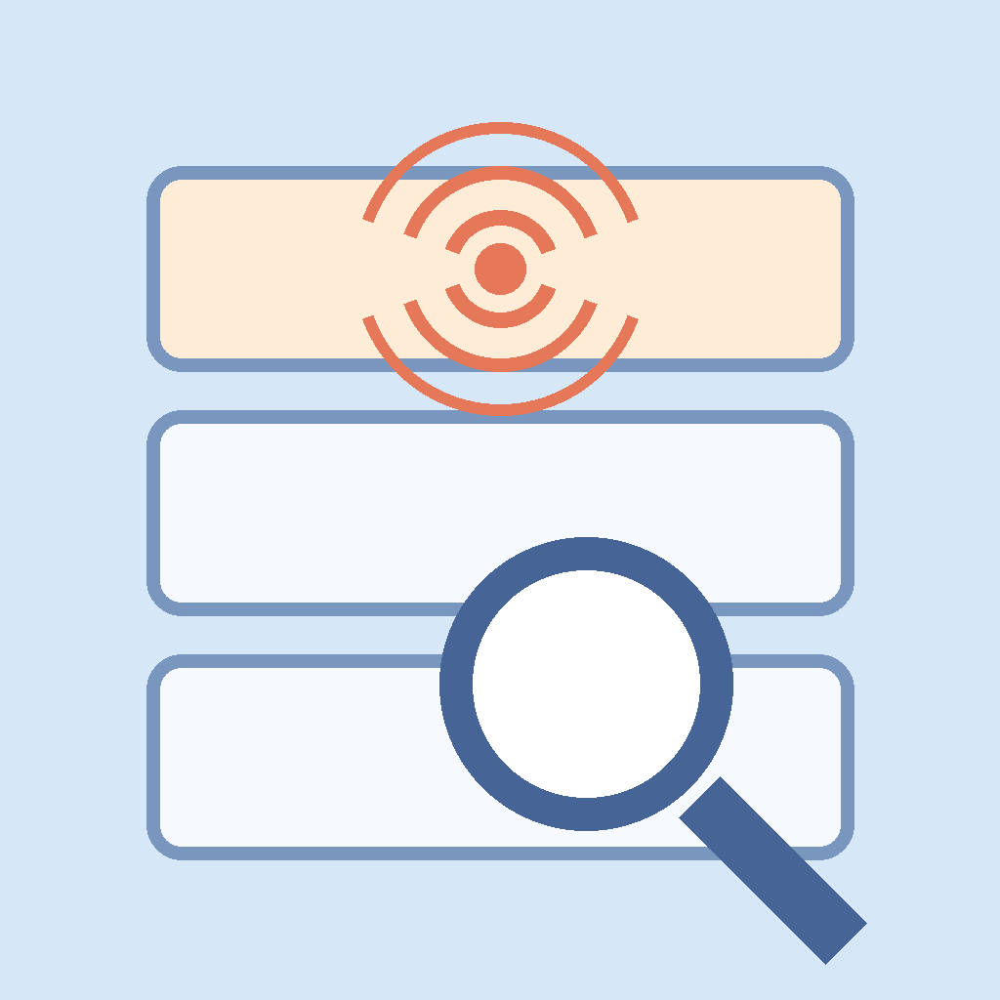

소음 범인잡기
층간소음을 밤새 기록하고, 보복 스피커인지 가려내고, 여러 기기로 소리가 오는 쪽을 찾는 아이폰·아이패드 앱
무엇을 하나요
- 기록 — 아이폰을 바닥에 두면 1분 평균·최고 소음과 바닥 진동을 밤새 재고, 법적 기준(2023년 시행 규칙)을 넘은 시간을 표시합니다.
- 소음 일지·보고서 — 잡힌 소음마다 시각·크기·종류를 남기고, 관리사무소·이웃사이센터에 낼 PDF 보고서를 만듭니다.
- 스피커 판별 — 같은 소리가 같은 간격·같은 길이로 되풀이되는지, 기계처럼 고른 박자·웅웅 저음인지 보고 스피커일 가능성을 점수와 근거로 보여 줍니다.
- 여러 기기로 방향 찾기 — 집 안의 아이폰·아이패드 여러 대로 함께 재어, 같은 소리를 어느 기기가 더 크게·먼저 들었는지로 위층·아래층·옆집을 가립니다.
- 잰 값은 아이폰 마이크로 어림한 참고 값이며 공식 측정값이 아닙니다. 공식 측정은 층간소음 이웃사이센터(1661-2642)에 신청할 수 있습니다.
쓰는 법 · 지원
- 「측정」에서 측정 위치를 고르고 「측정 시작」을 누른 뒤, 아이폰을 방 바닥에 화면이 위로 오게 두고 충전기를 꽂습니다. 화면을 잠가도 기록은 이어집니다.
- 아침에 「측정 끝」을 누르면 「소음 일지」에 그래프·사건 목록·스피커 판별이 나오고, 오른쪽 위 단추로 PDF 보고서를 만듭니다.
- 사람 말소리가 섞인 소리 조각은 저장하지 않고 바로 지웁니다(대화 녹음 방지).
- 여러 기기로 잴 때는 「함께 측정」에서 한 대를 대장 기기로, 나머지를 참가 기기로 들어간 뒤 손뼉으로 크기·시계를 맞추고 함께 시작합니다.
문의: goodday5768@gmail.com — 영업일 기준 2일 안에 답장드립니다.
© 2026 이승수영어전문학원